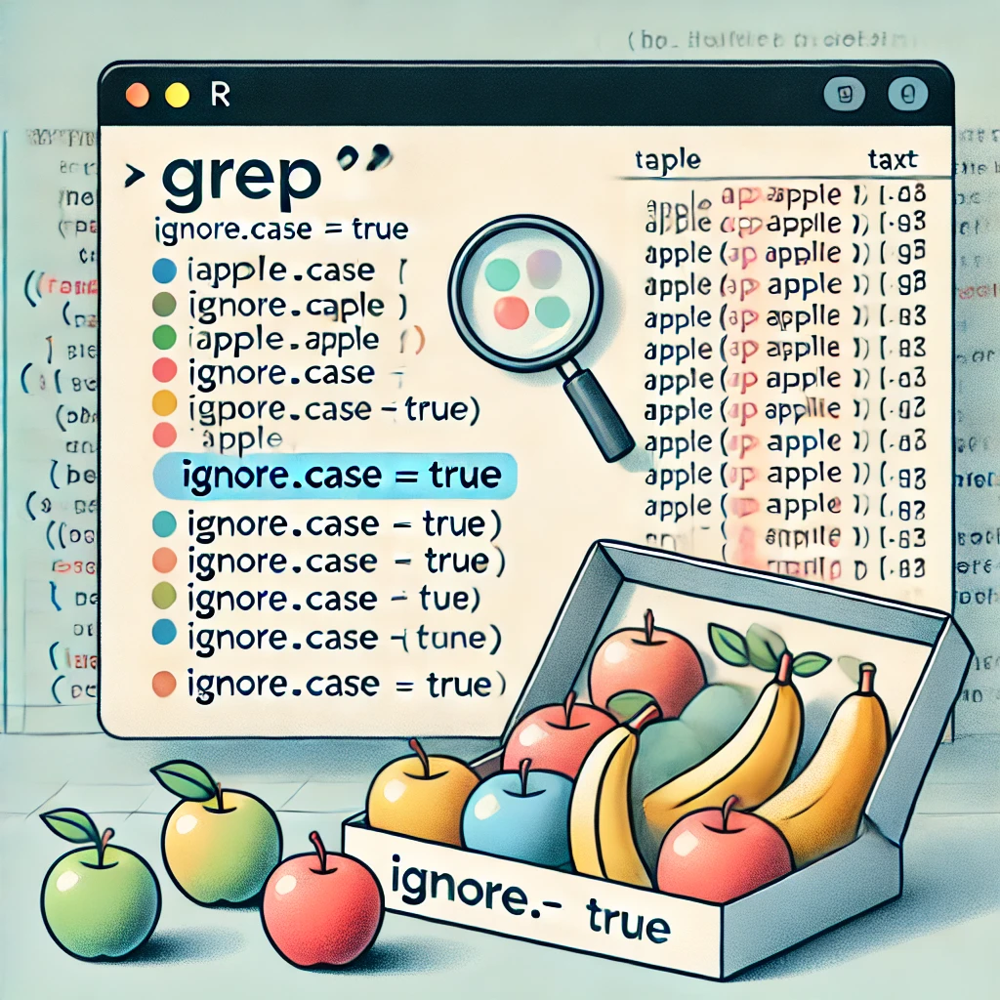

# Example of case-insensitive grep
text_vector <- c("Apple", "banana", "Cherry", "apple", "BANANA", "cherry")
# Case-insensitive search for "apple"
grep("apple", text_vector, ignore.case = TRUE)[1] 1 4Steven P. Sanderson II, MPH
September 4, 2024
Programming, Case-Insensitive grep in R, grep in R example, R grep case insensitive, How to use case-insensitive grep in R for text analysis
grep() in RThe grep() function in R is a powerful tool for searching and matching patterns within text data. It is commonly used in data cleaning, manipulation, and text analysis to find specific patterns or values in strings or data frames. By default, grep() performs a case-sensitive search, meaning it distinguishes between uppercase and lowercase characters.
This case sensitivity can be restrictive in scenarios where you want to match text regardless of case. Fortunately, grep() has an ignore.case argument that allows for case-insensitive matching, making it more flexible and powerful in handling textual data.
grep()?Using case-insensitive grep() is particularly useful in various scenarios, such as:
Text Mining and Natural Language Processing (NLP): In text analysis, you might need to search for a keyword or phrase regardless of its capitalization in the text data. For example, finding occurrences of the word “RStudio” should match “RStudio”, “rstudio”, “RSTUDIO”, etc.
Data Cleaning: In datasets, especially those containing user-generated content, there can be inconsistencies in capitalization. Using case-insensitive grep() helps in uniformly identifying records that should be treated as equivalent.
General Data Analysis: Case insensitivity is beneficial when working with categorical data or any situation where matching text needs to be more forgiving regarding capitalization differences.
grep() in RThe basic syntax for grep() in R is as follows:
grep(
pattern,
x,
ignore.case = FALSE,
value = FALSE,
fixed = FALSE,
useBytes = FALSE,
invert = FALSE
)Here’s a breakdown of the main arguments:
pattern: A character string containing a regular expression to be matched in the x argument.x: A character vector where the function will search for the pattern.ignore.case: A logical argument; if set to TRUE, the pattern matching is case-insensitive.value: A logical argument; if set to TRUE, the function returns the values of the matching elements rather than their indices.fixed: A logical argument; if set to TRUE, grep() will search for the exact pattern rather than treating it as a regular expression.useBytes: If TRUE, matching is done byte-by-byte rather than character-by-character.invert: If TRUE, returns elements that do not match the pattern.Using ignore.case = TRUE allows grep() to perform case-insensitive matching. Here is a simple example:
# Example of case-insensitive grep
text_vector <- c("Apple", "banana", "Cherry", "apple", "BANANA", "cherry")
# Case-insensitive search for "apple"
grep("apple", text_vector, ignore.case = TRUE)[1] 1 4This code will return the indices of all elements in text_vector that match “apple” regardless of their case, i.e., both “Apple” and “apple”.
grep() in Rgrep() with ignore.case = TRUETo perform a case-insensitive search using grep(), you simply need to set the ignore.case parameter to TRUE. This will allow the function to match the specified pattern regardless of whether the characters in the pattern or the search vector are uppercase or lowercase.
Syntax for Case-Insensitive grep():
Example Usage:
Output:
In this example, grep() searches for the pattern “science” in the text_vector. By setting ignore.case = TRUE, it matches all instances where “science” appears, regardless of capitalization.
grep()Consider a scenario where you have a character vector containing various fruit names, and you want to find all instances of “apple”, regardless of how they are capitalized.
fruits <- c("Apple", "Banana", "apple", "Cherry", "APPLE", "banana")
# Case-insensitive search for "apple"
apple_indices <- grep("apple", fruits, ignore.case = TRUE)
print(apple_indices)[1] 1 3 5Output:
The function returns the indices where “apple” is found, ignoring case differences.
You can also use grep() with ignore.case = TRUE to search within a data frame column. Suppose you have a data frame of customer reviews and you want to find all reviews that mention the word “service” in any case.
Output:
ID Review
1 1 Excellent service
2 2 Bad Service
4 4 SERVICE is poorThis example shows how to filter a data frame to retrieve rows where the “Review” column mentions “service” in any form.
grep() with Regular Expressionsgrep() supports regular expressions, allowing you to perform complex searches. For instance, you may want to find strings that start with “data” regardless of case:
Output:
print(data_indices)The function uses the regular expression ^data to find any word starting with “data” in any capitalization.
grep(), grepl(), regexpr(), and gregexpr()In R, there are several functions for pattern matching, each with different functionalities and use cases:
grep(): Returns the indices of the elements that match the pattern. When value = TRUE, it returns the matching elements themselves.
grepl(): Returns a logical vector indicating if there is a match or not for each element of the input vector.
regexpr(): Returns a vector of the same length as the input with the starting position of the first match or -1 if there is no match. It also returns the match length as an attribute.
gregexpr(): Similar to regexpr(), but returns a list of the starting positions of all matches.
Key Differences and Use Cases:
grep() when you need the indices or values of matching elements.grepl() when you need a logical vector to use in conditional statements or filtering.regexpr() when you need the position and length of the first match.gregexpr() when you need the positions of all matches within each element of the input vector.Example Comparison:
text_vector <- c("data science", "Data Mining", "analysis", "data-visualization")
# Using grep()
grep_result <- grep("data", text_vector, ignore.case = TRUE)
# Using grepl()
grepl_result <- grepl("data", text_vector, ignore.case = TRUE)
# Using regexpr()
regexpr_result <- regexpr("data", text_vector, ignore.case = TRUE)
# Using gregexpr()
gregexpr_result <- gregexpr("data", text_vector, ignore.case = TRUE)
print(grep_result)[1] 1 2 4[1] TRUE TRUE FALSE TRUE[1] 1 1 -1 1
attr(,"match.length")
[1] 4 4 -1 4
attr(,"index.type")
[1] "chars"
attr(,"useBytes")
[1] TRUE[[1]]
[1] 1
attr(,"match.length")
[1] 4
attr(,"index.type")
[1] "chars"
attr(,"useBytes")
[1] TRUE
[[2]]
[1] 1
attr(,"match.length")
[1] 4
attr(,"index.type")
[1] "chars"
attr(,"useBytes")
[1] TRUE
[[3]]
[1] -1
attr(,"match.length")
[1] -1
attr(,"index.type")
[1] "chars"
attr(,"useBytes")
[1] TRUE
[[4]]
[1] 1
attr(,"match.length")
[1] 4
attr(,"index.type")
[1] "chars"
attr(,"useBytes")
[1] TRUEThese functions provide flexibility in text processing tasks, and choosing the right function depends on the specific requirement of your analysis.
grep()While using the grep() function with ignore.case = TRUE, it’s essential to be aware of some common mistakes that can lead to errors or unexpected results:
ignore.case = TRUE: By default, grep() is case-sensitive. If you forget to set ignore.case = TRUE, the function will not match patterns with different capitalization, leading to incomplete results.# Incorrect usage without ignore.case = TRUE
text_vector <- c("apple", "Apple", "APPLE", "banana")
result <- grep("apple", text_vector) # This will only match the first "apple"
print(result)[1] 1grep() returns the indices of the matching elements. To get the matching elements themselves, you need to set value = TRUE. Failing to do so can cause confusion.# Correct usage to return values
matching_values <- grep("apple", text_vector, ignore.case = TRUE, value = TRUE)
print(matching_values)[1] "apple" "Apple" "APPLE"grep() uses regular expressions (regex) for pattern matching. A common mistake is not escaping special characters or using incorrect syntax in the pattern, which can cause grep() to behave unexpectedly.# Incorrect regex pattern without escape
text_vector <- c("abc.def", "abc-def", "abcdef")
result <- grep("abc.def", text_vector, ignore.case = TRUE)
print(result)[1] 1 2# Correct regex pattern with escape
correct_result <- grep("abc\\.def", text_vector, ignore.case = TRUE)
print(correct_result)[1] 1grep() in RThe grep() function can be combined with other functions in R to perform advanced data manipulation and cleaning tasks. Here are some examples:
grep() with subset() for Data Frame Filtering:You can use grep() inside subset() to filter data frames based on a pattern match:
Output:
grep() in Data Cleaning:grep() can help clean and standardize text data by identifying and replacing patterns:
Output:
To search for multiple patterns simultaneously, you can use the | operator in regular expressions:
Output:
grep()While grep() is a powerful function, it’s important to consider its performance, especially when working with large datasets:
Impact of ignore.case = TRUE on Performance: Enabling case insensitivity (ignore.case = TRUE) can slightly increase the computational load, as R needs to convert each character to a common case (usually lowercase) before performing the pattern match. However, this is generally a minor impact unless working with extremely large datasets.
Optimizing grep() Performance:
grep() to a specific subset of data instead of a full dataset to reduce computation time.grep() with other vectorized functions like sapply() or vapply() can leverage R’s vectorized computation capabilities.Output:
By understanding and applying these performance considerations, you can use grep() efficiently even on large datasets.
grep() IssuesUsing grep() effectively requires understanding how to troubleshoot common issues. Here are some tips for identifying and resolving problems when using grep() with ignore.case = TRUE:
Common Errors and Warnings:
invalid regular expression: This error occurs when there is a syntax error in the pattern. Ensure that special characters are properly escaped (e.g., using \\. for a literal period).grep() returns no matches, double-check that ignore.case is set correctly and that the pattern exists in the input vector.Interpreting grep() Results:
If grep() returns an empty result or unexpected indices, verify that the pattern argument accurately reflects the search criteria and that ignore.case = TRUE is set if needed.
Debugging Tips for Complex Patterns:
Test Patterns with Simple Data: Start with a small, simple vector to ensure the pattern works correctly before applying it to larger datasets.
Use print() Statements: Insert print() statements to check intermediate results and understand how grep() processes the data.
Visualize the Data: Sometimes, printing or plotting the data can help understand why certain patterns are not being matched.
grep() Error:While grep() is a versatile function for pattern matching, there are alternative methods and functions in R that provide case-insensitive search capabilities:
stringr Package Functions: The stringr package offers several functions that simplify string manipulation and pattern matching. For case-insensitive searches, you can use str_detect() and str_subset() with regex():library(stringr)
# Example of case-insensitive search using stringr
text_vector <- c("DataScience", "datascience", "DATA", "science", "Science")
# Case-insensitive search with str_detect
str_result <- str_detect(text_vector, regex("science", ignore_case = TRUE))
print(str_result)[1] TRUE TRUE FALSE TRUE TRUEtolower() and toupper() Functions: Another approach is to convert all text to a common case (lower or upper) before using grep():
# Convert to lowercase for case-insensitive search
lower_text_vector <- tolower(text_vector)
grep("science", lower_text_vector)[1] 1 2 4 5grep():
stringr package are generally more user-friendly and often provide clearer error messages. They also integrate well with dplyr for data manipulation.grep() is a base R function, so it doesn’t require additional package installations, making it more suitable for lightweight scripts or when working in environments with limited package support.grep() with Other Functions for Data Analysisgrep() can be combined with other R functions to perform advanced data manipulation and analysis tasks. This versatility makes it a powerful tool in the R programmer’s toolkit:
You can use grep() with ignore.case = TRUE in conjunction with filter() from dplyr to filter data frames based on complex text patterns:
library(dplyr)
# Example data frame
df <- data.frame(
ID = 1:5,
Description = c("Fresh Apple Juice", "Banana Bread", "apple tart", "Cherry Pie", "APPLE Jam")
)
# Use dplyr's filter with grep to find all rows with "apple"
apple_filtered_df <- df %>% filter(grepl("apple", Description, ignore.case = TRUE))
print(apple_filtered_df) ID Description
1 1 Fresh Apple Juice
2 3 apple tart
3 5 APPLE Jamgrep() with lapply() and sapply():For more complex operations, grep() can be used inside lapply() or sapply() to apply the function to each element of a list or a column of a data frame:
# Example list of character vectors
list_data <- list(
c("apple", "banana", "cherry"),
c("Apple Pie", "Banana Bread", "Cherry Tart"),
c("apple cider", "banana split", "cherry juice")
)
# Use sapply to find "apple" case-insensitively in each list element
apple_positions <- sapply(list_data, function(x) grep("apple", x, ignore.case = TRUE))
print(apple_positions)[1] 1 1 1Combining grep() with other R functions can significantly enhance your data analysis workflow, allowing you to perform complex filtering, subsetting, and string manipulation tasks efficiently.
To illustrate the versatility of grep() with ignore.case = TRUE, let’s explore some real-world case studies and examples where this function proves invaluable.
Suppose you are working on a text mining project analyzing customer feedback to identify common themes or keywords. A case-insensitive search allows you to catch all variations of a word regardless of capitalization:
# Example feedback data
feedback <- c("Great Service", "service was poor", "excellent SERVICE", "Customer Service is key", "Love the SERVICE")
# Find all mentions of "service" regardless of case
service_mentions <- grep("service", feedback, ignore.case = TRUE, value = TRUE)
print(service_mentions)[1] "Great Service" "service was poor"
[3] "excellent SERVICE" "Customer Service is key"
[5] "Love the SERVICE" This output captures all variations of the word “service,” ensuring comprehensive analysis.
grep()In data cleaning, you may need to identify and correct entries in a dataset that contain typos or inconsistencies in capitalization. For instance, in a dataset of product names, you want to ensure all references to “apple” products are standardized:
# Example product data
products <- c("Apple Juice", "apple juice", "APPLE JUICE", "Banana Smoothie", "apple cider")
# Standardize all "apple" product references
standardized_products <- sub("apple.*", "Apple Product", products, ignore.case = TRUE)
print(standardized_products)[1] "Apple Product" "Apple Product" "Apple Product" "Banana Smoothie"
[5] "Apple Product" All entries referencing “apple” are now standardized, facilitating cleaner data analysis.
In bioinformatics, case-insensitive searches are crucial for matching gene names or protein sequences where the case may vary depending on the data source. For example, finding occurrences of a specific gene name:
# Example gene list
genes <- c("BRCA1", "brca1", "BRCA2", "tp53", "TP53", "brca1")
# Case-insensitive search for "BRCA1"
brca1_indices <- grep("brca1", genes, ignore.case = TRUE)
print(genes[brca1_indices])[1] "BRCA1" "brca1" "brca1"This approach ensures that all mentions of “BRCA1” are captured, regardless of their format.
grep() in RTo maximize the efficiency and effectiveness of grep() in your R scripts, consider the following best practices:
Use Clear and Specific Patterns: When writing patterns for grep(), be as specific as possible. This not only improves the accuracy of matches but also enhances performance by reducing the number of potential matches.
Combine with Other Functions: Leverage grep() with functions like subset(), filter(), or lapply() to perform more complex data manipulation tasks.
Consider Case Sensitivity: Be mindful of whether case sensitivity is necessary for your analysis. If not, always set ignore.case = TRUE to avoid missing relevant data due to capitalization differences.
Test with Small Datasets First: When working with large datasets, test your grep() patterns on smaller subsets to ensure they work as intended. This prevents lengthy computation times and potential errors on large data.
Use value = TRUE for Direct Matches: If you need the actual matching elements rather than their indices, always set value = TRUE. This can simplify your code and make it more readable.
Handle Special Characters Appropriately: If your pattern includes special characters (e.g., “.”, “*“, or”+“), ensure they are properly escaped to avoid unintended matches.
The grep() function in R, with its flexibility and powerful pattern-matching capabilities, is an essential tool for any data scientist or analyst. By understanding how to use ignore.case = TRUE effectively, you can ensure that your text searches are comprehensive and accurate, capturing all relevant data regardless of capitalization.
Whether you are performing data cleaning, text mining, or advanced data analysis, mastering grep() will greatly enhance your ability to manipulate and analyze textual data in R. Remember to combine grep() with other R functions and packages to unlock even more powerful data manipulation capabilities.
Alternatives to grep() include functions from the stringr package such as str_detect() and str_subset() with regex(). You can also use base R functions like tolower() or toupper() to normalize case before searching.
